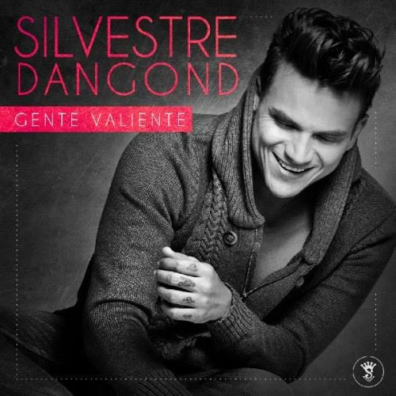
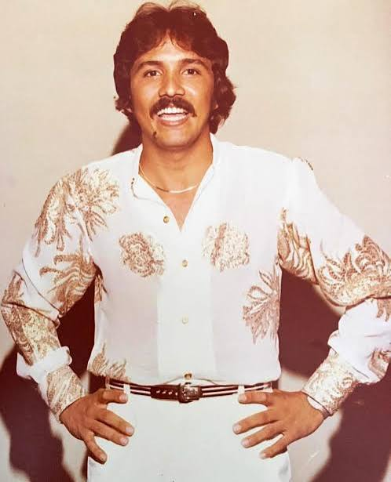

Silvestre Dangond

Silvestre Francisco Dangond Corrales (Urumita, La Guajira, 12 de mayo de 1980) es un cantante colombiano de música vallenata. Es considerado uno de los artistas más exitosos del género y uno de los grandes exponentes del vallenato contemporáneo. A lo largo de su carrera ha lanzado numerosos álbumes y canciones que se convirtieron en éxitos, ganando reconocimiento tanto a nivel nacional como internacional.
| Edad |
Profesion |
Pais de nacimiento |
| 44 años |
Cantante |
Colombia |
Diomedes Diaz

Diomedes Díaz Maestre (La Junta, La Guajira, 26 de mayo de 1957 - Valledupar, Cesar, 22 de diciembre de 2013) fue un cantautor colombiano de música vallenata. Fue uno de los artistas más importantes del género y es considerado uno de los máximos exponentes del vallenato. A lo largo de su carrera lanzó numerosos álbumes y canciones que se convirtieron en clásicos.
| Edad |
Profesion |
Pais de nacimiento |
| 56 años |
Cantante |
Colombia |
Rafael Orozco

Rafael José Orozco Maestre (Becerril, Cesar, 24 de marzo de 1954 - Barranquilla, Atlántico, 11 de junio de 1992) fue un cantante colombiano de música vallenata, fundador y vocalista del Binomio de Oro de América. Es recordado como uno de los más grandes intérpretes del vallenato y dejó un legado imborrable en la música colombiana.
| Edad |
Profesion |
Pais de nacimiento |
| 38 años |
Cantante |
Colombia |